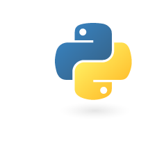

Python 3.10 ou superior
Obrigatóriosoftware
O que é: O cliente e o CLI rodam em Python 3.10+.
Como obter: Verifique com python3 --version.
Coletar publicações do Diário Oficial e convênios federais pelas rotas que o Estado publica para acesso por máquina, com paginação que para na resposta vazia e filtro verificado antes de qualquer lote.

PythonO que você precisa ter antes de rodar esta skill. Tudo o que é exigido aparece aqui — inclusive credenciais.
O que é: O cliente e o CLI rodam em Python 3.10+.
Como obter: Verifique com python3 --version.
PORTAL_TRANSPARENCIA_KEYO que é: Chave gratuita que autoriza a consulta de convênios federais pela API oficial.
Como obter: Cadastre-se em portaldatransparencia.gov.br, abra 'API de Dados' e gere a chave. Ela vai no cabeçalho chave-api-dados.
export PORTAL_TRANSPARENCIA_KEY="sua_chave_aqui"Cuidado: Não é necessária para ler uma página de busca salva: o parser funciona offline.
Transformar o Diário Oficial da União e a base de convênios federais em corpus citável, usando as rotas oficiais de dados abertos — sem contornar bloqueio e sem confundir silêncio da fonte com ausência de publicação.
| Nome | Afiliação | ORCID |
|---|---|---|
| Leonardo Fernandes Nascimento | LABHDUFBA · UFBA | 0000-0003-2929-1115 |
| Eric Brasil | UNILAB | 0000-0001-5067-8475 |
| Ricardo Sodré | UFBA | 0000-0003-3107-3686 |
ORCIDs entram apenas quando cada autor os fornece; nenhum é inventado.
NASCIMENTO, Leonardo Fernandes; BRASIL, Eric; SODRÉ, Ricardo. DOU and Federal Covenants for Research Pipelines (SS-0010), v1.0.0, 2026. LABHDUFBA/UFBA. DOI: 10.5281/zenodo.24507969
DOI: 10.5281/zenodo.24507969
git clone https://github.com/LABHDUFBA/scholarskills.git cd scholarskills/dou-federal-gazette pip install -r requirements.txt export PORTAL_TRANSPARENCIA_KEY="..."
A validação estrutural prova conformidade com a especificação Agent Skills e a completude do pacote. Não prova que o método está correto. Evidência do nível de maturidade desta skill: dou-federal-gazette/tests/RESULTS.md — 20 testes automatizados, todos verdes, sem rede..